07 — Creare una VLAN
Laboratorio VLAN e inter-VLAN routing con Cisco Packet Tracer
Sommario
1. Configuro la struttura di rete
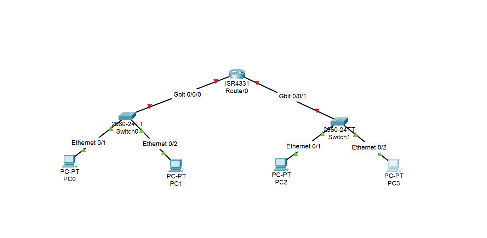
Dall’immagine, i collegamenti nelle varie porte ethernet con cavi straight-through
La struttura consisterà in:
- Due switch (uno per ciascun gruppo)
- Un router per la comunicazione tra reti locali
- Quattro postazioni, due per ciascun gruppo
2. Configuro indirizzi IP e netmask
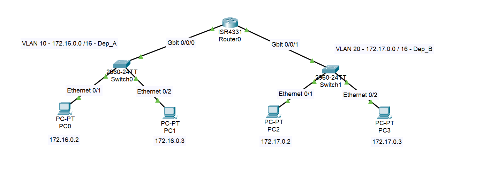
Scelgo range : 172.16.0.0 - 172.31.255.255
- La prima VLAN 10 avrà indirizzi
172.16.0.0 /16
Piano di indirizzamento della VLAN 10:
172.16.0.0è il network address.172.16.0.1è utilizzato come default gateway.172.16.255.255è il broadcast address della rete/16.- La seconda VLAN 20 avrà indirizzi
172.17.0.0 /16
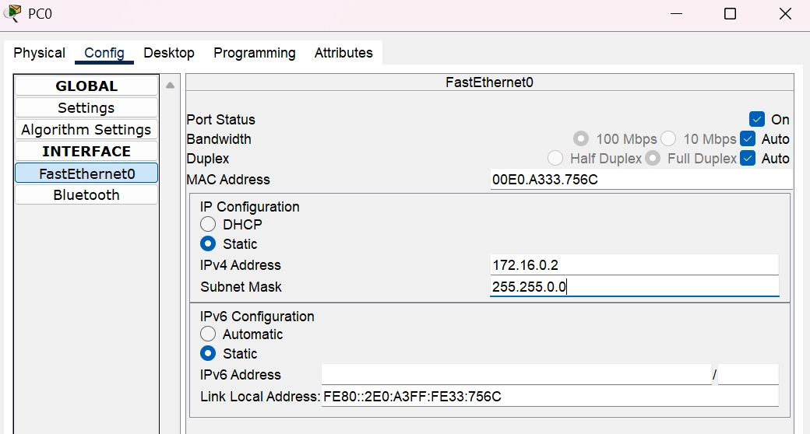
Configurazione indirizzo statico del PC-0. La subnet mask è automatica
- Se pingo l’indirizzo
172.16.0.3da172.16.0.2la configurazione risulta corretta
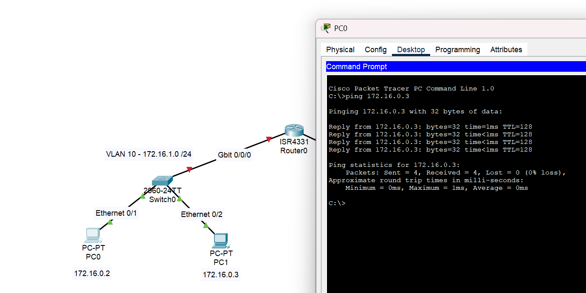
3. Configuro le VLAN a livello di Switch

Click sullo switch → CLI → Enter
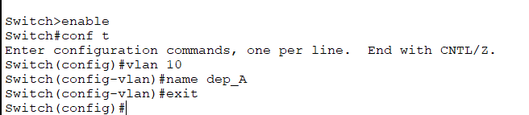
Creo una nuova VLAN con il nome dep_A
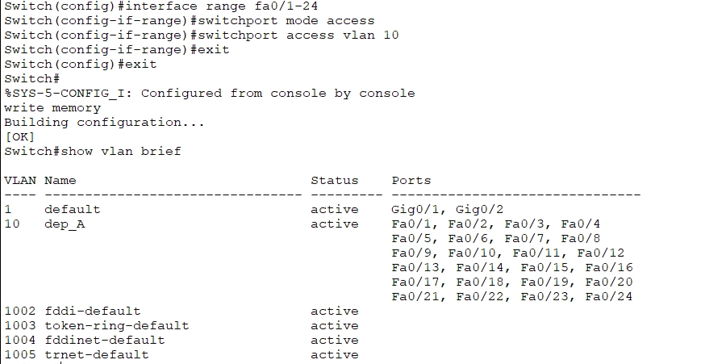
Faccio la stessa cosa per lo switch 2:
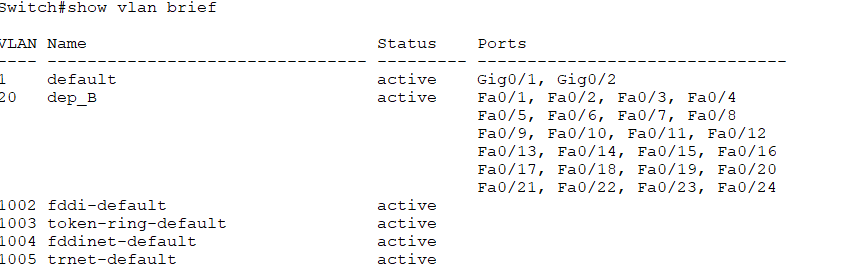
4. Configuro il router
- Se pingo dalla VLAN 10 alla VLAN 20, non riceverò risposta: serve configurare il router.
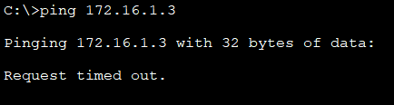
- Configuro porta router
gig0/0/0con default gateway172.16.0.1e subnet mask255.255.0.0
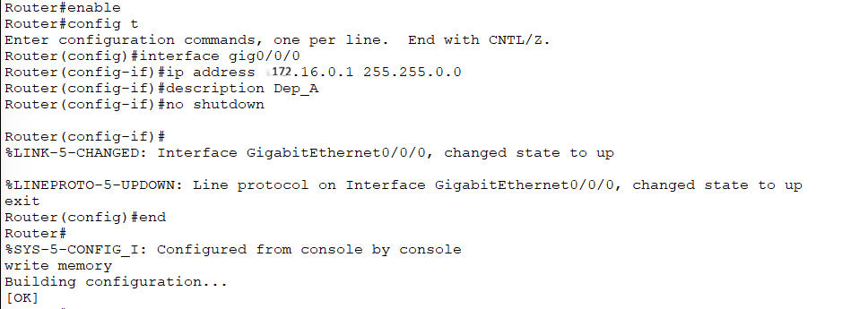
- Eseguo la stessa configurazione per la porta
gig0/0/1con default gateway172.17.0.1e subnet mask255.255.0.0
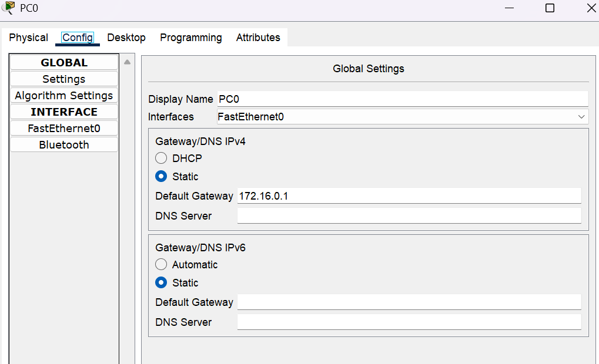
Imposto il default gateway (IP del router) su tutti e quattro i pc - ES: PC0
- A questo punto avrò ottenuto una corretta configurazione
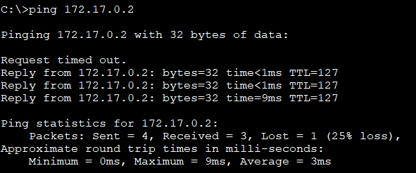
N.B. Il primo ping va in ‘Request timed out’ a causa del processo ARP (Address Resolution Protocol). Il PC e il router devono scambiarsi i rispettivi indirizzi MAC fisici prima di poter instradare il pacchetto IP. Una volta risolto l’indirizzo, i ping successivi vanno a buon fine.
Nota a margine sulla configurazione delle porte:
In questo laboratorio, il cavo che collega lo Switch al Router utilizza una delle 24 porte FastEthernet (che viaggiano a 100 Mbps). Avendo inserito l’intero range Fa0/1 - 24 all’interno della VLAN 10 e 20, il traffico scorre perfettamente e i ping verso il Default Gateway hanno successo.
Cosa cambia in azienda?
In un ambiente di produzione reale, il collegamento verso il router (chiamato Uplink) deve smaltire il traffico di tutti i PC contemporaneamente. Per evitare “colli di bottiglia”, si utilizzano le porte GigabitEthernet dello switch (1000 Mbps), come la Gig0/0/0.
Se avessimo usato la porta Gigabit per il router, avremmo dovuto esplicitamente assegnare anche quella alla nostra VLAN con questi comandi:
Switch(config)# interface gig0/0/0
Switch(config-if)# switchport mode access
Switch(config-if)# switchport access vlan 10
Un piccolo dettaglio architetturale che fa la differenza quando si progettano reti ad alte prestazioni!